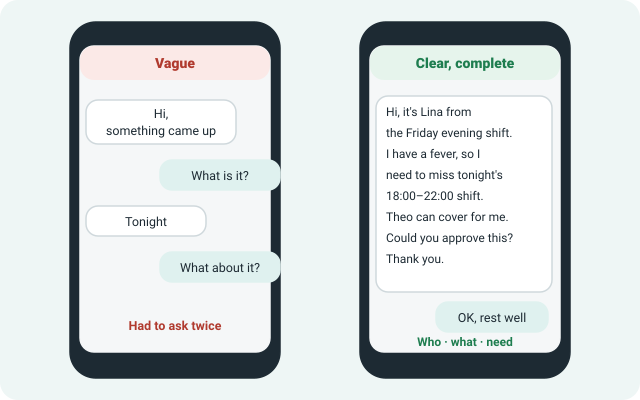

K2 · Speaking and writing clearly › Level 1 Exploring
Communicate in your first week at work by greeting, asking and writing complete messages
This lesson completes Sheet 5: First-week notebook. Print template.
1. Objectives
- Collect questions in a log and ask your trainer when they are free.
- Write a 4-part work message: greeting and name, what, what you need, thanks.
2. Retrieval warm-up
- What are the 3 points of a 60-second introduction?
- What should you do within 24 hours after an interview?
Answers
- Now; what you have done; why this place.
- Send a short thank-you. Note the questions asked, one thing that went well, one thing to fix.
Review: Your first interview.
3. Explanation
In your first week at work, you will have lots of questions. Asking is right. The issue is when, who and how to ask.
Greet people and ask how to address them. On day one, greet each person and say your name. If you are not sure how to address someone, ask: "Should I call you Mr Lee, or Daniel?"
A question log. Carry a small notebook or use notes on your phone.
- Urgent questions that affect customers or safety: ask straight away.
- Non-urgent questions: write them in the log. Ask them together when your trainer is free, such as in a quiet moment or at the end of a shift.
- Before asking, try to find the answer in documents or by watching colleagues.
People get tired of answering the same question many times. Write the answers down so you do not ask again.
The 4-part work message. Part-time workplaces often use group chats. A clear message lets the reader reply straight away.
The 4-part work message
- Greeting and nameWho you are, which shift.
- WhatWhat happened, and when.
- What you needYour request or proposed solution.
- ThanksOne short sentence.

Reporting absence or lateness. Report it as early as possible, in the way your workplace requires. If you can, suggest someone to cover. Phone if it is urgent and close to the shift.
Shared group chats. Do not post personal matters in the shared group. Do not photograph customers or internal documents to post online.
4. Workplace example
Hypothetical scenario. Omar is an intern in the warehouse of a garment factory. On day one, Sara shows him how to fill in goods-received forms.
During the morning, Omar has 5 questions. He asks 1 straight away, because a delivery truck is waiting: "Which code goes on this package?" He writes the other 4 in his log.
At 16:30 the warehouse is quiet. Omar asks: "Sara, I have 4 questions about the goods-received form. Do you have 5 minutes?" He writes each answer next to its question.
The next day, Omar is stuck in traffic. At 7:20 he messages Sara: "Hi Sara, it's Omar, the warehouse intern. There's heavy traffic on my route and I'll be about 15 minutes late. I can make up the 15 minutes at the end of my shift if that's OK. Sorry about this."
Why this works: Omar separates urgent questions from ones that can wait. His lateness message has all 4 parts and arrives before his shift starts.
5. Practice
Hypothetical scenario. You work part-time at a bubble tea shop. You have a make-up exam on Saturday morning, which clashes with your 8:00–12:00 shift. You found out about the exam on Wednesday evening. Your co-worker Ivy agrees to cover, if the manager approves.
Write a message to your manager, Paul.
Hint 1
Check all 4 parts: greeting and name, what (which shift, why), what you need (Ivy covering), thanks.
Hint 2
Send it on Wednesday evening. Do not wait until just before Saturday.
Model answer
"Hi Paul, it's [name] from the Saturday morning shift. I've just been given a make-up exam this Saturday morning, which clashes with my 8:00–12:00 shift. I've asked Ivy and she can cover. Could you approve a shift swap with Ivy? Thank you."
(Names are hypothetical, for illustration.)
6. Self-check
Choose an answer. Every option has an explanation.
Question 1. On your first day at a café, you do not know how to charge for a discounted item. A customer is waiting to pay. What should you do?
-
Not quite. This affects a customer right now, so it is an urgent question.
-
Correct. Correct. Questions that affect customers or safety get asked at once.
-
Not quite. Charging the wrong amount causes a loss for the customer or the café.
Question 2. Which message has all 4 parts?
-
Not quite. It is missing your name, the shift, the reason and a specific request.
-
Correct. Correct. It has a greeting and name, what, what you need, and thanks.
-
Not quite. There is no name or greeting, and the manager does not know what you are asking for.
Question 3. You have 6 non-urgent questions about how the stockroom is organised. Your trainer is busy receiving a delivery. What should you do?
-
Not quite. Interrupting someone many times makes it hard for them to focus.
-
Correct. Correct. Grouping questions saves time for both of you.
-
Not quite. Not asking leads to mistakes. Asking at the right time is a good skill.
Question 4. A famous person visits the shop. You want to photograph them and their receipt to post on your own social media. What should you do?
-
Not quite. Images of customers and the shop's documents are not yours to post.
-
Correct. Correct. Customers' images and internal documents need to be protected.
-
Not quite. The staff chat is for work only. Customer images still should not be shared.
7. Reflection
- What usually makes you hesitate to ask? How could a question log help with that?
- Which of the 4 parts was missing from your most recent work message?
8. Real-world application
In the next 7 days, use a question log at school, at your part-time job or in a group project. At the end of the week, count how many answers you found yourself and how many you had to ask. Rewrite one of your work messages so it has all 4 parts. Record both on Sheet 5.
How to take instructions and repeat them back correctly: Confirm instructions before you start (in Vietnamese). Politeness as a habit is covered on daynentang.com.
9. Metadata
| skill | K2 · Speaking and writing clearly |
|---|---|
| level | Level 1 · Exploring |
| group | N2 |
| framework_map | CSfW: 2a Communicate for work; 2b Connect and work with others; SkillsFuture CCS: Communication; NACE: Communication; Professionalism (reference only) |
| original | Vietnamese version |
| updated | 2026-11-14 |
Finish the lesson
Mark it as done and the site suggests reviews after 1, 3 and 7 days. The data stays on your device only.
Suggested reviews: